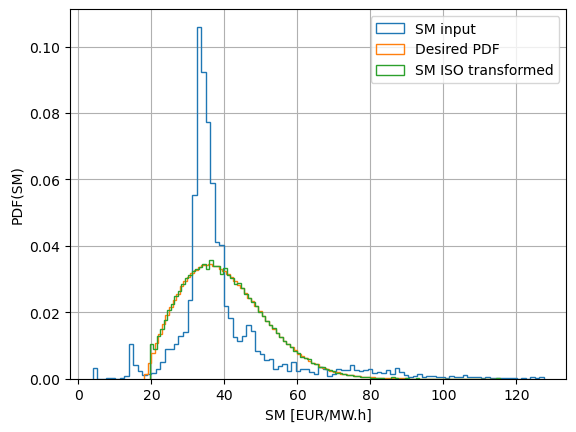
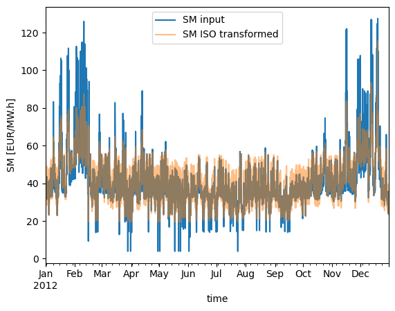
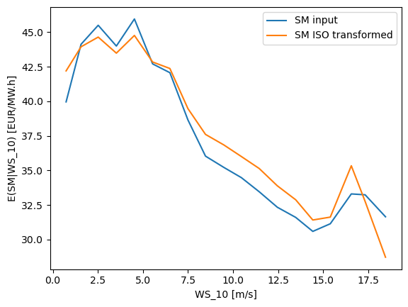
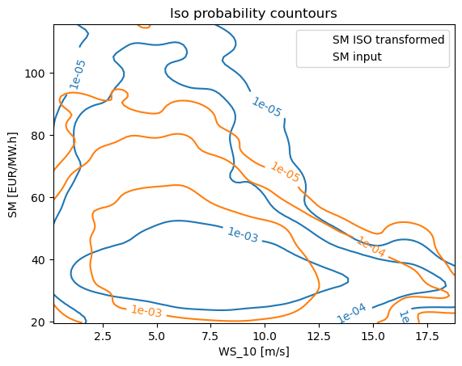

How to use iso-probabilistic transformations to obtain weather-corrleated spot markets with a desired distribution
This tutorial describes how to use iso-probabilistic transformations to generate weather-correlated spot market data with desired distributions. This technique is crucial for accurate modeling and optimization of hybrid power plants (HPP) in markets where weather conditions significantly impact energy prices and availability. By following this guide, you will learn how to apply these transformations to align weather data with market requirements.
[1]:
import numpy as np
from numpy import newaxis as na
import pandas as pd
import scipy
from statsmodels.distributions.empirical_distribution import ECDF, monotone_fn_inverter
from hydesign.weather.weather import isoprob_transfrom
from hydesign.examples import examples_filepath
[2]:
inputs = pd.read_csv(examples_filepath+'Europe/GWA2/input_ts_Denmark_good_solar.csv',
index_col=0, parse_dates = True)
inputs
[2]:
| WS_1 | WS_50 | WS_100 | WS_150 | WS_200 | WD_1 | WD_50 | WD_100 | WD_150 | WD_200 | temp_air_1 | ghi | dni | dhi | Price | |
|---|---|---|---|---|---|---|---|---|---|---|---|---|---|---|---|
| 2012-01-01 00:00:00 | 2.810816 | 6.582182 | 7.993129 | 8.112989 | 9.236903 | 166.346357 | 168.595724 | 170.888214 | 173.593446 | 175.457612 | 275.686735 | 0.0 | 0.0 | 0.0 | 31.558 |
| 2012-01-01 01:00:00 | 2.904450 | 6.810934 | 8.275190 | 8.356479 | 9.566073 | 169.298921 | 171.004601 | 172.747782 | 175.411415 | 176.846748 | 275.846921 | 0.0 | 0.0 | 0.0 | 31.558 |
| 2012-01-01 02:00:00 | 2.991752 | 6.987023 | 8.481921 | 8.563847 | 9.907062 | 170.332390 | 172.071325 | 173.846343 | 176.856068 | 178.182438 | 275.908146 | 0.0 | 0.0 | 0.0 | 31.558 |
| 2012-01-01 03:00:00 | 3.081025 | 7.153487 | 8.673896 | 8.668350 | 10.113215 | 172.369415 | 174.117329 | 175.900884 | 179.006964 | 180.215424 | 275.985910 | 0.0 | 0.0 | 0.0 | 31.558 |
| 2012-01-01 04:00:00 | 3.032618 | 7.087701 | 8.604443 | 8.657067 | 10.226668 | 176.961308 | 179.096749 | 181.275850 | 185.728569 | 187.114208 | 276.139611 | 0.0 | 0.0 | 0.0 | 31.558 |
| ... | ... | ... | ... | ... | ... | ... | ... | ... | ... | ... | ... | ... | ... | ... | ... |
| 2012-12-30 19:00:00 | 4.346459 | 9.731132 | 11.725017 | 11.833588 | 13.738749 | 232.070531 | 233.096306 | 234.139569 | 235.862549 | 236.381657 | 276.787589 | 0.0 | 0.0 | 0.0 | 34.992 |
| 2012-12-30 20:00:00 | 4.351285 | 9.781253 | 11.793128 | 11.924614 | 13.851638 | 236.280844 | 237.063277 | 237.866713 | 239.526916 | 239.919572 | 276.550026 | 0.0 | 0.0 | 0.0 | 33.135 |
| 2012-12-30 21:00:00 | 4.131801 | 9.349829 | 11.286007 | 11.395169 | 13.252576 | 234.027128 | 235.111454 | 236.219895 | 237.857080 | 238.418164 | 276.707764 | 0.0 | 0.0 | 0.0 | 32.290 |
| 2012-12-30 22:00:00 | 4.226335 | 9.590430 | 11.581791 | 11.705639 | 13.626405 | 231.547924 | 233.116758 | 234.719448 | 236.786499 | 237.542031 | 276.996122 | 0.0 | 0.0 | 0.0 | 30.990 |
| 2012-12-30 23:00:00 | 4.142047 | 9.416042 | 11.376241 | 11.520482 | 13.401961 | 234.196810 | 235.697595 | 237.226551 | 239.410625 | 240.209847 | 277.489206 | 0.0 | 0.0 | 0.0 | 29.739 |
8760 rows × 15 columns
1. Sample a target distrubtion, the number of samples can be different between input data and desired distribution
[3]:
#y_desired = np.random.normal(size=int(1e6)) * 5 + 35
y_desired = np.random.weibull(a=2, size=int(1e6)) * 25 + 18
[4]:
y_ISO = isoprob_transfrom(y_input=inputs.Price.values, y_desired=y_desired)
[5]:
from matplotlib import pyplot as plt
[6]:
inputs.Price.hist(bins=100, histtype='step', density=True, label = 'SM input')
plt.hist(y_desired,bins=100, histtype='step', density=True, label = 'Desired PDF')
plt.hist(y_ISO,bins=100, histtype='step', density=True, label = 'SM ISO transformed')
plt.xlabel('SM [EUR/MW.h]')
plt.ylabel('PDF(SM)')
plt.legend()
print()

[7]:
inputs['SM_ISO'] = y_ISO
[8]:
inputs.loc[:,['Price','SM_ISO']].describe()
[8]:
| Price | SM_ISO | |
|---|---|---|
| count | 8760.000000 | 8760.000000 |
| mean | 39.597426 | 40.162819 |
| std | 14.988624 | 11.601875 |
| min | 3.946000 | 19.562333 |
| 25% | 32.804000 | 31.420951 |
| 50% | 35.428500 | 38.791135 |
| 75% | 41.028500 | 47.430395 |
| max | 127.491000 | 115.507682 |
[9]:
inputs.Price.plot(label = 'SM input')
inputs.SM_ISO.plot(alpha=0.5, label = 'SM ISO transformed')
plt.ylabel('SM [EUR/MW.h]')
plt.xlabel('time')
plt.legend()
print()

[10]:
inputs.loc[:,['WS_100','Price','SM_ISO']].corr()
[10]:
| WS_100 | Price | SM_ISO | |
|---|---|---|---|
| WS_100 | 1.000000 | -0.272191 | -0.289896 |
| Price | -0.272191 | 1.000000 | 0.914447 |
| SM_ISO | -0.289896 | 0.914447 | 1.000000 |
[11]:
inputs['ws_bin'] = pd.cut(inputs.WS_100, bins=np.arange(0,20,1))
inputs_grp = inputs.groupby('ws_bin').mean()
[12]:
plt.plot(inputs_grp.WS_100.values, inputs_grp.Price.values, label = 'SM input')
plt.plot(inputs_grp.WS_100.values, inputs_grp.SM_ISO.values, label = 'SM ISO transformed')
plt.legend()
plt.ylabel(r'E(SM|WS_10) [EUR/MW.h]')
plt.xlabel('WS_10 [m/s]')
print()

[13]:
import scipy.stats as st
def kde_plot(
x,y,
ax,
c='k',
levels = [1e-5, 5e-5, 1e-4, 5e-4],
fmt = '%1.0e',
label = None
):
xmin = np.min(x)
xmax = np.max(x)
ymin = np.min(y)
ymax = np.max(y)
# Peform the kernel density estimate
xx, yy = np.mgrid[xmin:xmax:100j, ymin:ymax:100j]
positions = np.vstack([xx.ravel(), yy.ravel()])
values = np.vstack([x, y])
kernel = st.gaussian_kde(values)
f = np.reshape(kernel(positions).T, xx.shape)
ax.set_xlim(xmin, xmax)
ax.set_ylim(ymin, ymax)
# Contour plot
cset = ax.contour(xx, yy, f, levels=levels, colors=c)
if label != None:
cset.collections[0].set_label(label)
# iso-prob labels on lines
ax.clabel(cset, inline=1, fontsize=10, fmt = fmt)
[14]:
fig = plt.figure()
ax = fig.add_subplot(111)
kde_plot(x=inputs.WS_100.values, y=inputs.Price.values, ax=ax, levels = [1e-5, 1e-4, 1e-3], c='C0', label='SM ISO transformed')
kde_plot(x=inputs.WS_100.values, y=inputs.SM_ISO.values, ax=ax, levels = [1e-5, 1e-4, 1e-3], c='C1', label='SM input')
plt.legend()
plt.title('Iso probability countours')
plt.ylabel('SM [EUR/MW.h]')
plt.xlabel('WS_10 [m/s]')
[14]:
Text(0.5, 0, 'WS_10 [m/s]')

[ ]: